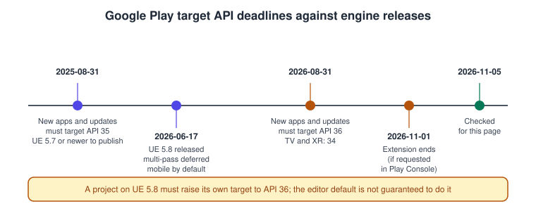
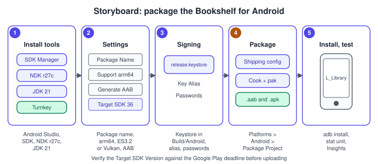
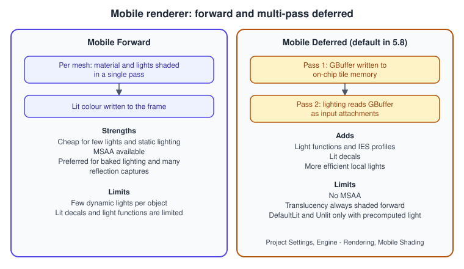
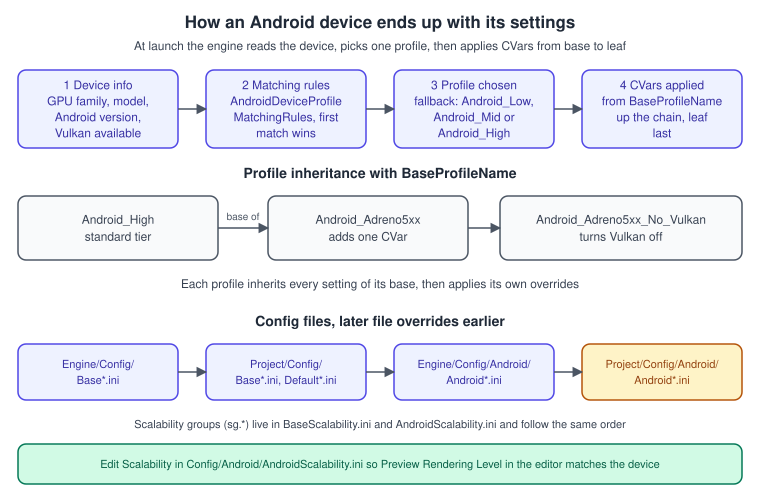

Android and Mobile
|
This content was generated with the assistance of AI and should be verified against the official documentation before being relied on in production. |
A phone is the hardest place a game has to run: a tile-based GPU with a small power budget, a few gigabytes of memory shared with the operating system, a thermal limit that throttles the clock after a few minutes, and an app that can be sent to the background at any moment. Unreal Engine ships with a dedicated mobile rendering path, a device-profile system that picks different settings for each phone, and packaging that produces the Android App Bundle (AAB) Google Play wants. This page covers that whole path for the Bookshelf, from installing the toolchain to a signed bundle on a test device.
The facts on this page were checked in November 2026 against the Unreal Engine 5.8 documentation (5.8 was released on 2026-06-17; the latest hotfix found is 5.8.4) and Google’s Play requirements page. The platforms are Android 8.0 (API 26) and later and iOS, iPadOS, tvOS and visionOS built from macOS. Desktop packaging, cooking and the pak and IoStore formats are on Packaging for Desktop; this page adds what is different on a phone. The profiling workflow on a device is in Profiling and Optimization. Android development outside Unreal (Gradle, signing, Play Console) is covered by the site’s Android section: Building, Signing and Preparing a Release and Publishing on Google Play.
Toolchain and requirements
Unreal does not use the Gradle project you would create in Android Studio. It generates its own Gradle project during packaging, using the SDK, NDK and Java runtime you point it at. Epic pins one combination per engine release, and mixing versions is the most common cause of a failed first build.
| Component | Unreal Engine 5.8 requirement | Notes |
|---|---|---|
Android Studio |
Koala 2024.1.2 Patch 1 |
Provides the SDK Manager and the bundled JDK. A newer Android Studio can be installed beside it for your own apps. |
Android SDK |
Recommended API 35, minimum API 34 to compile the engine |
Minimum install level (the oldest phone that can run the game) is API 26. The Android 8.0 target level for native code is |
NDK |
r27c |
Installed from the SDK Manager. A different NDK major version is not supported. |
Build tools |
35.0.1 |
Installed from the SDK Manager. |
Java runtime |
OpenJDK 21.0.3 |
The Android Studio bundled JDK satisfies this. |
Gradle and Android Gradle Plugin |
Gradle 8.7, AGP 8.5.2 (release notes, Platform SDK Upgrades) |
Unreal downloads and drives Gradle itself; you do not install it. |
AGDE |
23.2.91 or later for AGDE debugging |
Only needed if you debug native code with Android Game Development Extension. |
Epic’s requirements page states that publishing to Google Play needs Unreal Engine 5.7 or newer because earlier engines target a lower API level and are rejected on upload. The 5.8 release notes add that Turnkey, the engine’s SDK installer, now automates more of the developer-workstation setup, which makes the first run less error-prone than the manual steps in older tutorials.
Setting up a workstation
-
Install Android Studio Koala 2024.1.2 Patch 1 and start it once so that it downloads the SDK.
-
In the SDK Manager, install the SDK Platform for API 35 (and API 34 as the minimum), the Build-Tools 35.0.1 and, under SDK Tools, the NDK version r27c.
-
Let Turnkey check the machine. From the editor, open Platforms > Android and run the SDK setup entry, or run the Turnkey command line shipped with the engine. Turnkey sets the environment variables (the SDK, NDK and JDK paths) that the build reads, and it can install missing components.
-
In the editor open Project Settings > Platforms > Android and accept the Android SDK license when prompted. The same page has the Android SDK section where the SDK, NDK and Java paths can be overridden.
-
On the phone enable Developer options and USB debugging, connect it with a cable and confirm the debugging prompt.
adb devicesmust list the phone asdevice, notunauthorized.
The Google Play target API deadline

Two different numbers decide whether an upload is accepted: the target API level that the app declares, and the compile SDK the engine builds against. Google’s requirement concerns the target level only. Per Google’s Play requirements page, starting on 31 August 2026 new apps and app updates must target Android 16 (API level 36) or higher, with exceptions: Wear OS and Android Automotive OS apps must target API 35 or higher, and Android TV and Android XR apps API 34 or higher. Existing apps must target API 35 or higher to stay available to new users on newer Android versions. Developers who needed more time could request an extension to 1 November 2026 in Play Console, a date that has already passed when this page was checked.
Epic’s own requirements page still describes API 35 as the Play requirement and recommends SDK 35. The 5.8 release notes list a default shipping target of SDK 34 under their Android platform upgrades. The practical consequence is that a project on Unreal Engine 5.8 must raise its own Target SDK Version under Project Settings > Platforms > Android > APK Packaging and test on a device running Android 16 before uploading. Do not assume the editor default satisfies Google, and read the behavior-change list for each API level between your old and new target, because Android changes permissions, foreground service rules and back navigation per target level. The site’s Publishing on Google Play page explains the Play Console side.
Android Project Settings
All Android options live in Project Settings > Platforms > Android. The values are saved in Config/DefaultEngine.ini under the Android runtime settings section, so they are version-controlled with the project.
| Section and setting | What it does |
|---|---|
APK Packaging > Android Package Name |
A reverse-domain identifier such as |
APK Packaging > Store Version |
An integer between 1 and 2147483647. Every upload to Play needs a higher value than the previous one. |
APK Packaging > Version Display Name |
The user-visible version, usually |
APK Packaging > Minimum SDK Version, Target SDK Version |
Minimum controls the oldest Android version that can install the app; target tells Android which behavior set the app expects. Raise the target to meet the Play deadline above. |
APK Packaging > Install Location |
Internal Only, Prefer External or Auto. |
APK Packaging > Orientation |
Portrait, Landscape, Sensor, Full Sensor and others. A landscape-only Bookshelf avoids relayout when the phone rotates. |
Build > Support ARM64 (arm64-v8a) |
Builds the 64-bit ARM libraries. Required by Google Play and by every current phone. |
Build > Support x86_64 |
Epic’s page says it requires a GitHub source build. Useful for emulators on Intel hardware. |
Build > Support OpenGL ES3.2 |
Enabled by default. Includes the shaders for ES 3.2 and above. |
Build > Support Vulkan |
Enables the Vulkan RHI and its shaders. Vulkan-capable phones then choose Vulkan through their device profile. |
Build > Support Vulkan Desktop (SM5, experimental) |
Enables the desktop-class renderer on phones that can run Shader Model 5. Experimental on Android. |
Distribution Signing |
Key Store, Key Alias, Key Store Password and Key Password (blank means the keystore password). The keystore file goes in |
App Bundles |
Generate Bundle (AAB), Generate Universal APK from Bundle, Enable ABI Split, Enable Language Split, Enable Density Split. |
Advanced APK Packaging |
Extra Tags for Node, Extra Permissions and other manifest hooks, for permissions the engine does not add itself. |
The relevant part of DefaultEngine.ini for the Bookshelf looks like this. Only non-secret values belong in version control; the keystore passwords are entered in Project Settings or supplied by your build machine, never committed.
[/Script/AndroidRuntimeSettings.AndroidRuntimeSettings]
PackageName=com.example.bookshelf
StoreVersion=12
MinSDKVersion=26
TargetSDKVersion=36
bBuildForArm64=True
bSupportsVulkan=True
bEnableBundle=TrueSigning
Google Play requires every release to be signed with the same key for the life of the app. Create an upload keystore once with the JDK keytool, keep a backup in a password manager, and place the file in Build/Android. Play App Signing, enabled by default for new apps, lets Google hold the final signing key while you sign uploads with the upload key, which makes a lost upload key recoverable. The mechanics of keystores, Play App Signing and key rotation are the same as for any Android app and are explained in Building, Signing and Preparing a Release. A debug-signed build installs on your own phone but Play rejects it.
Packaging an Android build

-
Open Project Settings > Platforms > Android and set the package name, a store version, the minimum and target SDK, Support ARM64 and Generate Bundle (AAB). Choose Support Vulkan if you want Vulkan on phones that offer it; keep Support OpenGL ES3.2 as the fallback.
-
Under Distribution Signing enter the key alias and the keystore file name (the file is already in
Build/Android) and the passwords. -
Open Platforms > Android in the main toolbar and choose the packaging configuration. Epic’s page uses Development for tests and says to switch to Shipping for a finished game.
-
Choose File > Package Project > Android and pick a texture format when asked (ETC2, ASTC or DXT, see below). Choose or create an output folder, for example
AndroidBuilds. -
Wait for the progress message in the lower-right corner of the editor. The output folder then contains a subfolder named for the texture format (for example
Android_ETC2) with the.apk, the install and uninstall scripts and, if enabled, the.aab. -
With the phone connected, run the generated install script (a
.baton Windows, a.commandon macOS, a.shon Linux). It ends with an "Installation successful" message.
Texture formats
The texture format is chosen at packaging time, not in Project Settings, and a package normally contains one format.
| Format | Notes |
|---|---|
ETC2 |
Supported by every OpenGL ES 3.x class device, with alpha compression. The safe default. |
ASTC |
The newest format, with block-size control over the quality and size trade-off. Only some devices support it, so check the audience before choosing it. |
DXT |
Supported by Nvidia Tegra GPUs, with alpha compression. Rarely needed today. |
ETC1, ETC1a, ATC, PVRTC |
Legacy formats of older engine versions. |
APK, AAB and splits
An APK is the installable file. An AAB is the upload format for Google Play: Play uses it to generate the smaller per-device APKs. With Generate Bundle (AAB) enabled, packaging produces a .aab for Play plus a universal .apk for testing on your own devices. The optional splits reduce what each user downloads: ABI split (one set of libraries per CPU architecture), language split and density split. Generate Universal APK from Bundle controls the test APK.
One restriction matters for large games: an App Bundle cannot include .obb expansion files, so the base module must fit Play’s size limits, or the content has to be delivered as a Play Asset Delivery pack or downloaded after install. Keep the cooked size low with the techniques in the performance section and with the chunking options described on the packaging page.
Packaging from the command line
A build server runs the same cook, stage and package steps through the Unreal Automation Tool. The flags below follow the form Epic documents for its Lyra example; add the Android-specific project settings to DefaultEngine.ini as shown above.
# From <UE_ROOT>/Engine/Build/BatchFiles
./RunUAT.sh BuildCookRun \
-project=/path/to/Bookshelf/Bookshelf.uproject \
-platform=Android \
-clientconfig=Shipping \
-build -cook -stage -pak -package \
-archive -archivedirectory=/path/to/AndroidBuildsThe same command works from RunUAT.bat on Windows. The packaging page lists the remaining flags and how Zen and incremental cooking change them.
The mobile renderer

Unreal has two mobile shading paths. Mobile Forward shades each mesh with its lights in a single pass. Mobile Deferred writes a GBuffer first and lights from it afterwards; on mobile the GBuffer stays in the tile memory of the GPU, which is what makes the approach affordable on tile-based hardware. The 5.8 release notes state that multi-pass deferred rendering is now the default path across mobile platforms, with forward rendering still available as an opt-in, and that targeted materials and global passes use half-precision (FP16) shaders. The 5.8 notes also list new mobile support for SSAO, SSR, deferred decals, contact shadows and higher-quality water. Earlier Epic pages describe forward as the default, so a project upgraded from an older version should check which mode it actually uses.
The mode is a project-wide choice under Project Settings > Engine - Rendering > Mobile > Mobile Shading (restart the editor after changing it). An older, now deprecated, Epic page documents a console variable for the same switch, r.Mobile.ShadingPath=1 in DefaultEngine.ini for deferred.
| Topic | Mobile Forward | Mobile Deferred |
|---|---|---|
Lights |
A small number of dynamic lights per object |
More efficient local lights, light functions, IES light profiles |
Decals |
Limited |
Lit decals; lit decals are not supported together with static lighting, emissive decals are. Normals are octahedron-encoded, so a decal can overwrite but not blend them. |
Anti-aliasing |
MSAA available |
MSAA is not supported (the GBuffer would be too large and shading would run per sample) |
Shading models |
Several |
With precomputed lighting only DefaultLit and Unlit are available; Epic recommends forward for projects that rely mainly on baked lighting or many reflection captures |
Translucency |
Forward |
Always shaded forward; set glass or water to Surface ForwardShading in the material’s Lighting Mode |
Hardware notes |
- |
Mali Vulkan devices default to 16 bytes per pixel and up to 4 input attachments; |
Source: Using the Mobile Deferred Shading Mode in Unreal Engine, Mobile Feature Levels and Rendering Modes in Unreal Engine and Unreal Engine 5.8 Release Notes
Graphics APIs and feature levels
The default Android feature level is OpenGL ES 3.2. Vulkan is the modern alternative and is the route to higher-end features; Epic recommends it only on Android 9 or newer, which is why the device profile system keeps both a Vulkan and a non-Vulkan variant. r.Android.DisableVulkanSupport defaults to 1 and Vulkan-enabled profiles set it to 0, so a device only uses Vulkan if the project enabled it, the phone has Vulkan drivers and the matching profile allows it. On iOS the graphics API is Metal; the iOS Material Quality setting plays the role of the ES 3.2 one on Android. Shader Model 5 on Vulkan and the desktop renderer on iOS (Metal Desktop Renderer, beta) are for the highest-end phones; Epic’s page says to restart the editor after enabling them and to set r.Android.DisableVulkanSM5Support to 0.
The general differences between OpenGL ES, Vulkan and Metal are in the site’s OpenGL ES on Android, Vulkan and Metal sections, and how Unreal chooses between them is in Rendering Overview.
Device profiles and scalability

A device profile is a named set of console variables, texture settings and scalability levels applied to a class of devices. A phone launches the game, the engine reads its GPU family, model, Android version and Vulkan availability, finds the first matching rule and applies the profile it names. The standard profiles are Android_Low, Android_Mid and Android_High; they are also the fallback when no rule matches. GPU-specific profiles build on them with BaseProfileName: the engine’s Adreno 5xx example inherits Android_High, adds one CVar, and a further profile inherits that one and switches Vulkan off.
Where the files are
Configuration files load in this order, and each later file overrides the earlier ones: Engine/Config/Base*.ini, Project/Config/Base*.ini, Engine/Config/Android/Android*.ini, Project/Config/Android/Android*.ini. Device profiles are defined in BaseDeviceProfiles.ini and AndroidDeviceProfiles.ini; Epic’s device profile page recommends a project Config/DefaultDeviceProfiles.ini as the best place for device-specific configuration. Scalability levels are in BaseScalability.ini and AndroidScalability.ini. Epic recommends changing the *Scalability.ini files rather than putting scalability values inside device profiles, so that Preview Rendering Level in the editor reflects mobile scalability correctly.
Matching rules
The matching rules sit in the section [/Script/AndroidDeviceProfileSelector.AndroidDeviceProfileMatchingRules]. Each entry names a profile and a list of comparisons; the first entry whose comparisons all hold wins, so rules are ordered from the lowest to the highest specification and grouped by manufacturer. The source of a comparison is one of SRC_DeviceModel, SRC_DeviceMake, SRC_GPUFamily, SRC_GlVersion, SRC_AndroidVersion, SRC_VulkanAvailable, SRC_VulkanVersion or SRC_PreviousRegexMatch, and the comparison is CMP_Regex, CMP_Equal, CMP_NotEqual, CMP_Less, CMP_Greater or one of the Ignore and Equal variants.
The Bookshelf adds a profile for mid-range Mali GPUs. The profile name and the rule are illustrative; the syntax is the one Epic documents.
; Config/DefaultDeviceProfiles.ini
[Bookshelf_Mali_Mid DeviceProfile]
DeviceType=Android
BaseProfileName=Android_Mid
+CVars=r.Shadow.MaxResolution=1024
+CVars=sg.ShadowQuality=1
+CVars=r.MobileContentScaleFactor=0.85
[/Script/AndroidDeviceProfileSelector.AndroidDeviceProfileMatchingRules]
+MatchProfile=(Profile="Bookshelf_Mali_Mid",Match=((SourceType=SRC_GPUFamily,CompareType=CMP_Regex,MatchString="^Mali-G7")))Source: Customizing Device Profiles and Scalability in Unreal Engine Projects for Android and Setting Up Device Profiles in Unreal Engine
Settings written after a scalability value take precedence over that value, which is why the profile above lowers sg.ShadowQuality and then also pins an explicit shadow resolution. Memory buckets add another dimension: devices are grouped by RAM thresholds defined in the platform engine ini files, and a profile can then use suffixed keys such as +CVars_Smaller= or +CVars_Tiniest= and per-bucket texture LOD group entries, for example a smaller maximum size for the World texture group on the smallest bucket.
Scalability overrides
Scalability values run from 0 to 3 on Epic’s reference page. To change what a level means on Android, add sections to the project’s Config/Android/AndroidScalability.ini; it takes precedence over the engine’s file.
; Config/Android/AndroidScalability.ini
[ShadowQuality@1]
r.Shadow.MaxResolution=1024
r.Shadow.MaxCSMResolution=1024
[FoliageQuality@0]
r.Foliage.DensityScale=0.2Android configuration rules
Device profiles tune a device that is allowed to run the game. The Android Configuration Rules system decides whether the device is allowed at all. A file Build/Android/configrules.txt is parsed at startup; its first line is a version marker (// version:1) that you increment after each change. A condition command compares a device value (memory, processor count, hasNEON, SRC_GpuFamily, SRC_AndroidVersion, screen width and others) with a match string and, when all comparisons hold, can set error (block the app with a dialog), warning (show a dialog that can be dismissed) or Profile (override the device profile that the matching rules would pick). The file is packaged into the APK through a Unreal Plugin Language (UPL) XML next to the module’s Build.cs, and the dialog texts come from Build/Android/res/values/ConfigurationStrings.xml with per-language folders for translations.
Changing quality at run time
The player can change scalability from the editor (Settings > Engine Scalability Settings), the console (sg.FoliageQuality 2 sets a value, and typing sg.FoliageQuality alone prints the current value and where it was last set), Blueprint (Get Game User Settings, then the scalability set functions) or C++ through UGameUserSettings::GetGameUserSettings().
Touch input, lifecycle and memory in the Bookshelf
The Bookshelf’s grab action, defined with Enhanced Input on Enhanced Input, needs an on-screen equivalent on a phone. The APlayerController can show a virtual-joystick touch interface; the Bookshelf activates it only on mobile platforms. A game instance subsystem also reacts to the app going to the background and picks a quality level from the available memory.
// BookshelfPlayerController.h
#pragma once
#include "CoreMinimal.h"
#include "GameFramework/PlayerController.h"
#include "BookshelfPlayerController.generated.h"
class UTouchInterface;
UCLASS()
class BOOKSHELF_API ABookshelfPlayerController : public APlayerController
{
GENERATED_BODY()
public:
ABookshelfPlayerController();
protected:
virtual void BeginPlay() override;
/** Touch layout (virtual stick and buttons) shown on phones and tablets. */
UPROPERTY(EditDefaultsOnly, Category = "Bookshelf|Mobile")
TObjectPtr<UTouchInterface> MobileTouchInterface;
};// BookshelfPlayerController.cpp
#include "BookshelfPlayerController.h"
#include "Bookshelf.h"
#include "GameFramework/TouchInterface.h"
#include "Kismet/GameplayStatics.h"
ABookshelfPlayerController::ABookshelfPlayerController()
{
}
void ABookshelfPlayerController::BeginPlay()
{
Super::BeginPlay();
if (!IsLocalController())
{
return;
}
const FString Platform = UGameplayStatics::GetPlatformName();
const bool bIsMobile = Platform == TEXT("Android") || Platform == TEXT("IOS");
if (bIsMobile && MobileTouchInterface)
{
ActivateTouchInterface(MobileTouchInterface);
SetVirtualJoystickVisibility(true);
UE_LOG(LogBookshelf, Log, TEXT("Touch interface active on %s"), *Platform);
}
else
{
SetVirtualJoystickVisibility(false);
}
}The Blueprint equivalent is the Activate Touch Interface node on the player controller, fed with a Touch Interface asset, called from Event BeginPlay after a Get Platform Name branch.
The second class reacts to the Android lifecycle. A phone can pause the app for a call or when the user switches away; the engine reports it through FCoreDelegates. The subsystem saves the score on the way out and chooses a scalability level from total RAM on the way in.
// BookshelfMobileSubsystem.h
#pragma once
#include "CoreMinimal.h"
#include "Subsystems/GameInstanceSubsystem.h"
#include "BookshelfMobileSubsystem.generated.h"
UCLASS()
class BOOKSHELF_API UBookshelfMobileSubsystem : public UGameInstanceSubsystem
{
GENERATED_BODY()
public:
virtual void Initialize(FSubsystemCollectionBase& Collection) override;
virtual void Deinitialize() override;
private:
void HandleEnterBackground();
void HandleEnterForeground();
void ChooseQualityFromMemory();
FDelegateHandle BackgroundHandle;
FDelegateHandle ForegroundHandle;
};// BookshelfMobileSubsystem.cpp
#include "BookshelfMobileSubsystem.h"
#include "Bookshelf.h"
#include "GameFramework/GameUserSettings.h"
#include "HAL/PlatformMemory.h"
#include "Misc/CoreDelegates.h"
void UBookshelfMobileSubsystem::Initialize(FSubsystemCollectionBase& Collection)
{
Super::Initialize(Collection);
BackgroundHandle = FCoreDelegates::ApplicationWillEnterBackgroundDelegate.AddUObject(
this, &UBookshelfMobileSubsystem::HandleEnterBackground);
ForegroundHandle = FCoreDelegates::ApplicationHasEnteredForegroundDelegate.AddUObject(
this, &UBookshelfMobileSubsystem::HandleEnterForeground);
ChooseQualityFromMemory();
}
void UBookshelfMobileSubsystem::Deinitialize()
{
FCoreDelegates::ApplicationWillEnterBackgroundDelegate.Remove(BackgroundHandle);
FCoreDelegates::ApplicationHasEnteredForegroundDelegate.Remove(ForegroundHandle);
Super::Deinitialize();
}
void UBookshelfMobileSubsystem::HandleEnterBackground()
{
// The process can be killed after this point: persist anything that matters.
UE_LOG(LogBookshelf, Log, TEXT("Entering background"));
}
void UBookshelfMobileSubsystem::HandleEnterForeground()
{
UE_LOG(LogBookshelf, Log, TEXT("Returned to foreground"));
}
void UBookshelfMobileSubsystem::ChooseQualityFromMemory()
{
const uint32 TotalGB = FPlatformMemory::GetConstants().TotalPhysicalGB;
UGameUserSettings* Settings = UGameUserSettings::GetGameUserSettings();
if (!Settings)
{
return;
}
// 0 = Low ... 3 = Epic on the scalability reference page
const int32 Level = TotalGB <= 4 ? 0 : (TotalGB <= 6 ? 1 : 2);
Settings->SetOverallScalabilityLevel(Level);
Settings->ApplyNonResolutionSettings();
UE_LOG(LogBookshelf, Log, TEXT("%u GB of RAM, scalability level %d"), TotalGB, Level);
}A device profile is usually the better place for static, per-model decisions; code like this is for choices that depend on measured state (memory, thermal state, battery saver) that the profile system cannot know in advance.
Performance on a phone
Epic’s mobile performance guidelines give concrete budgets, and they are worth keeping on the wall even though the examples on that page mention older tablets.
-
Draw calls. The page says the draw calls of the entire scene should be at most 700 for any single view, and suggests checking the number on the device with a statistics command of the RHI in use.
-
Triangles. Keep the scene at or under about 500,000 per view.
-
Overdraw. Masked and translucent materials are shaded again for every layer; use them sparingly and over small screen areas. The Shader Complexity view mode (Alt+8) shows hot spots.
-
Textures. Use square power-of-two sizes. The
ListTexturescommand shows where texture memory goes. -
Materials. Use as few texture lookups and instructions as possible; five samplers exist but using all of them is expensive. Do UV scaling in the vertex shader with Customized UVs. Use Quality Switch nodes for simpler versions on low-end devices and set
r.MaterialQualityLevelper device profile (0 Low, 1 High, 2 Medium, 3 Epic on that page). -
Lighting. Use baked lighting or one Stationary directional light with Static lights for everything else when the project can; set the maximum number of movable point lights to 0 when no dynamic point or spot lights are needed. Limit the number of shadow cascades.
-
Post-processing. Most effects are disabled on mobile, but bloom and depth of field are on by default and some effects can cost 60 ms or more on certain devices.
showflag.PostProcessing 0shows what they cost. -
Resolution. Mobile Content Scale Factor 0.0 uses the native resolution; on Android 1.0 targets 1280 by 720 and 2.0 targets 2560 by 1440. Rendering below the native resolution is the single most effective lever on a GPU-bound phone.
The Bookshelf’s books are an example of what to measure: nine unique books cost almost nothing, but a library of several hundred should use instanced static mesh components so that the draw calls stay low. The desk lamp is a MegaLights local light on desktop (see Lighting, Lumen and MegaLights); on a phone it is a baked or Stationary light instead.
Frame pacing and thermals
A phone that holds 60 frames per second for 30 seconds and then drops to 40 is thermal throttling, not a code problem. Epic has a separate page on frame pacing for mobile devices, and Epic recommends platform-native tools (Android Performance Analyzer, Perfetto, platform GPU debuggers) for CPU scheduling and thermal metrics, which the engine’s own profilers do not capture. The workflow with Unreal Insights over USB or Wi-Fi is in Profiling and Optimization. The general principles are in Performance and Profiling.
Previewing mobile in the editor
The editor can imitate a mobile target without a device: the Preview Platform and Preview Rendering Level settings switch the viewport to the mobile feature level, and Play in Editor in a new process respects the preview platform, the device profile and the viewport aspect ratio, including a flipped orientation (5.8). Preview JSON files describe a specific phone for Android and now also for iOS, and generating one shows a confirmation dialog. Previewing finds material and shading problems quickly; it does not replace testing on hardware, because tile memory, driver behavior, thermals and the real texture format are only present on the phone.
Source: Unreal Engine 5.8 Release Notes
iOS and other Apple platforms
Builds for iOS, iPadOS, tvOS and visionOS are produced on a Mac. For 5.8 Epic recommends Xcode 26.1.1 (minimum 26.0) for those targets, and Xcode 15.4 or newer for macOS builds (the release notes say this was lowered from the 5.6 requirement). The supported target SDK is 17 or later, and Metal 2.4 to 3.1 on iOS. A provisioning profile and a signing certificate are needed to run on a device, in the same way as for a native app: see the site’s Membership, Signing, Capabilities and Info.plist page. visionOS and AR concepts are in visionOS and Augmented Reality.
The 5.8 platform changes for Apple devices are Shader Model 6 on iOS through Apple’s Metal Shader Converter (experimental; it needs iOS 26 and an A17 Pro or better), full keyboard and mouse support for iOS and iPadOS, and .uappex control files so that UnrealBuildTool generates Xcode App Extension targets.
Source: Unreal Engine 5.8 Release Notes
Common mistakes
-
Wrong toolchain versions. A newer NDK or an Android Studio from another year fails in ways that look like engine bugs. Use the versions in the table.
-
Forgetting the target API. An upload built for API 35 or lower is rejected for new apps and updates after 31 August 2026. Check Target SDK Version after every engine upgrade.
-
Shipping a debug-signed or unsigned build. Play requires the release keystore. Keep the keystore and its passwords out of source control and back them up.
-
Reusing the store version. Every upload needs a higher Store Version.
-
Relying on
.obbfiles with an AAB. App Bundles cannot include them. -
Choosing ASTC without checking devices. Only some phones support it; ETC2 is the broad default.
-
Testing only in the editor. The mobile preview does not reproduce tile memory, thermal throttling or driver bugs. Profile on a phone in a Development or Test build.
-
Assuming MSAA with Mobile Deferred. It is not supported; use temporal or post-process anti-aliasing instead.
-
Per-frame allocations and Blueprint tick on hundreds of actors. These cost far more on a phone CPU than on a desktop.
-
Forgetting the lifecycle. An Android app can be killed after it enters the background; save state in the background callback.
Performance notes
-
Profile with Development or Test builds on the phone, not the editor. Start with
stat unitto learn whether the game thread, the render thread or the GPU is the limit. -
Lower Mobile Content Scale Factor before cutting visual features; it scales the pixel work of the whole frame.
-
Keep draw calls near the guideline of 700, use instancing for repeated meshes and avoid dynamic shadows from many lights.
-
Texture memory is usually the first limit: right-size textures, use the texture format that fits the audience and let streaming work.
-
Cook only what ships: remove unused plugins and shader permutations, which also reduces app size and load time.
What changed recently
| Version or date | Change |
|---|---|
UE 5.7 (November 2025) |
Epic states that publishing to Google Play needs 5.7 or newer because of the API 35 requirement. |
UE 5.8 (2026-06-17) |
Multi-pass deferred is the default mobile path (forward remains opt-in); FP16 shaders in targeted materials; mobile SSAO, SSR, deferred decals, contact shadows, higher-quality water; simpler workstation setup with Turnkey; Mobile PIE respects the preview platform and device profile; native gesture events for iOS and Android (experimental); keyboard and mouse on iOS and iPadOS; iOS Shader Model 6 (experimental); iOS application extensions; Unreal Engine Remote runs on Android; Xcode 26.1.1 recommended. |
2026-08-31 |
Google Play: new apps and updates must target API 36 (Wear OS and Automotive 35, TV and XR 34). |
2026-11-01 |
End of the extension that could be requested in Play Console. |
Where the books are outdated
The packaging and mobile publishing concepts of this page appear in four books. Learning Unreal Engine Android Game Development by Nitish Misra (2015, Unreal Engine 4.4 to 4.7) installs NDK r9c with NVPACK and uploads APKs; Blueprints Visual Scripting for Unreal Engine by Marcos Romero and Brenden Sewell (2nd edition, 2019) packages for Android in chapter 12 with APK uploads; the learning path Unreal Engine: Game Development from A to Z by Joanna Lee, John P. Doran and Nitish Misra (2016) covers mobile publishing in its second module; and Unreal Engine 5 Game Development with C++ Scripting by Zhenyu George Li and E. Wyn Roberts (2023) packages in its final chapter.
| In the books | Today |
|---|---|
NDK r9c, NVPACK, an old Android SDK |
Android Studio Koala, NDK r27c, SDK 35 recommended and 34 minimum, Turnkey for setup |
Uploading an APK to Google Play |
An Android App Bundle is the upload format; the app must target API 36 from 2026-08-31 |
OpenGL ES 2 and 3.0 as the only Android graphics path |
OpenGL ES 3.2 by default, Vulkan available, Vulkan SM5 experimental |
Forward-only mobile rendering and static lighting |
Multi-pass deferred by default in 5.8, with forward as an option |
ETC1 and PVRTC textures |
ETC2 as the broad default and ASTC where supported |